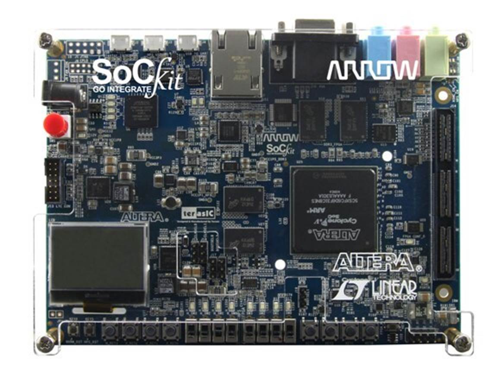
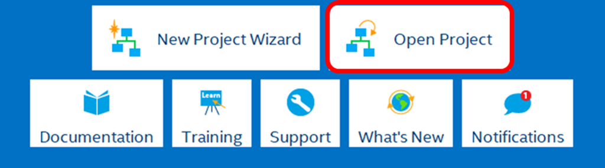
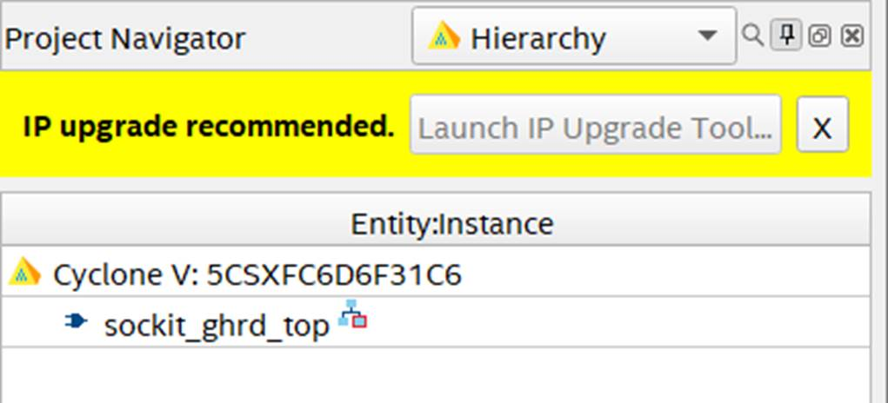
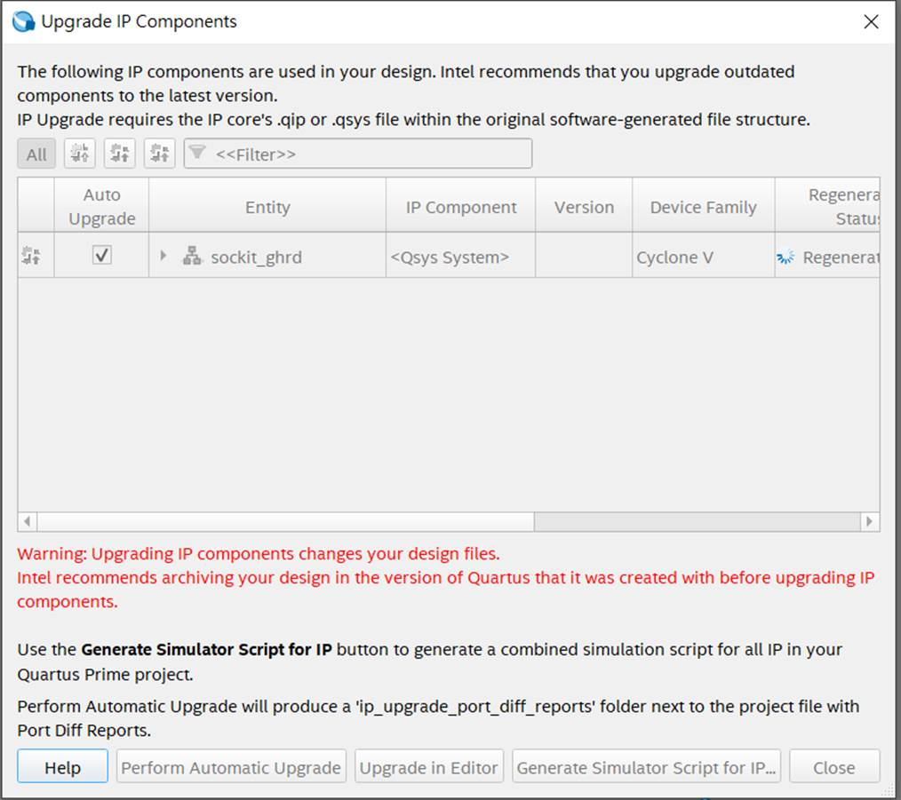
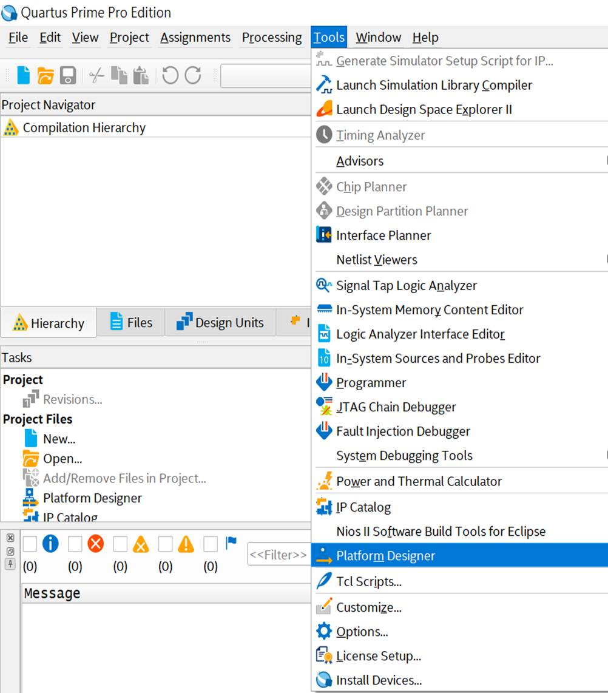
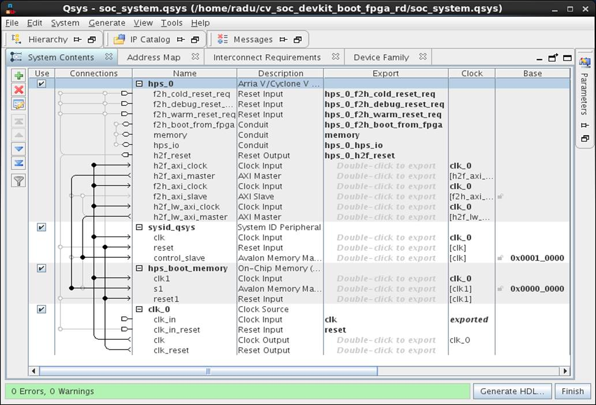
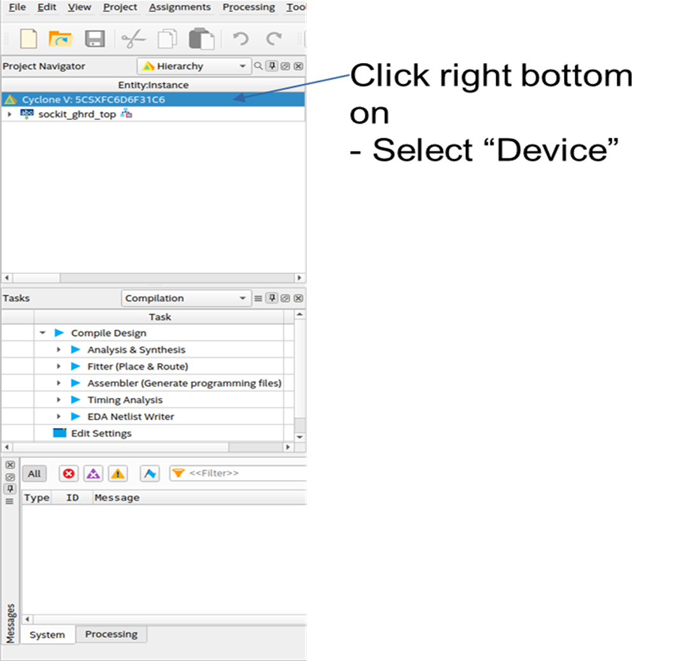
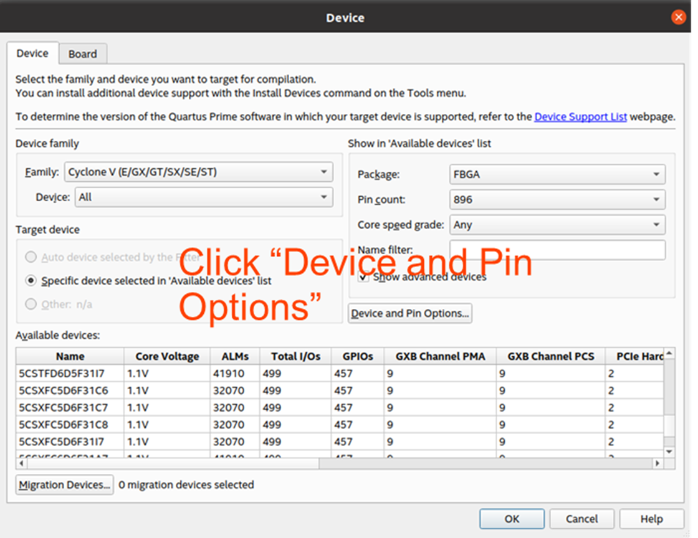
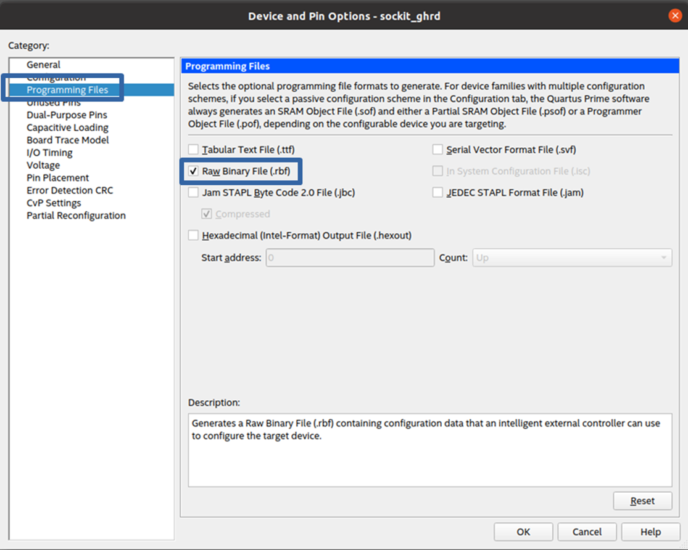
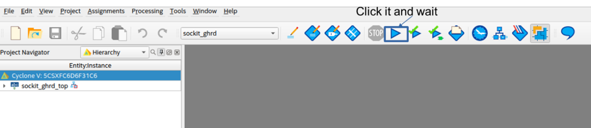

Cyclone V SoC 的FPGA構建流程
|
設備需求以及事前準備 n OS: Ubuntu 20.04 n Arrow SoCKit EVB n Intel Quartus Prime Standard 22.1 |
 |
有一些依賴包是必須要安裝的, 請依照下面的指令將所有的依賴包全部安裝起來.
|
$sudo apt-get install gawk wget git-core diffstat unzip texinfo \ gcc-multilib build-essential chrpath socat cpio python python3 \ python3-pip python3-pexpect xz-utils debianutils iputils-ping \ python3-git python3-jinja2 libegl1-mesa libsdl1.2-dev pylint3 xterm \ libncurses-dev gawk flex bison openssl libssl-dev make
|
新手注意事項: ! $ 是不需要 Copy 的. ! 左邊代表安裝很多依賴包 ! 每一行的最後面有 \ 代表指令包含下一行, 可貼一行 Enter 一次, 或整個 Copy 起來再貼到 Terminal 上就按一次 Enter 就好 |
請在 ~/ 裡面建立一個資料夾叫做 Projects, 你也可以放在任何 ext4 格式的磁碟區域. 如下面步驟
|
$cd ~/ $mkdir Projects $cd Projects $mkdir cv_example.sdmmc $cd cv_example.sdmmc $export TOP_FOLDER=`pwd`
|
新手注意事項: ! Terminal 如果關掉,所有的環境都要重新設置 ! 例如 ü $export TOP_FOLDER=`pwd` 就是環境設置 |
下載SOCKIT的參考設計 Golden Hardware Reference Design(GHRD)
|
$cd $TOP_FOLDER $git clone https://github.com/arrow-socfpga/arrow-sockit-ghrd $cd arrow-sockit-ghrd $git checkout sockit-ghrd-19.1
|
新手注意事項:
|
開啟 Quartus Prime Std, 並依照下圖打開 /home/Projects/arrow-sockit-ghrd/sockit_ghrd.qpf

按一下 Launch IP Upgrade Tool……

請選擇 “Perform Automatic Upgrade”

打開 Platform Designer 並開啟 sockit_ghrd.qsys.

Platform Design 畫面如下,如果不更動,請直接按 Generate HDL, 當所有的東西都跑完, 請按 Finish.

回到 Quartus 主畫面, 接下來我們要設定自動產生 RBF 檔.



設定好後, 就可以直接 Compile 整個 Project 了.

跑完後, 一定會有以下幾個檔案
/home/Projects/cv_example.sdmmc/arrow-sockit-ghrd/output_files/sockit_ghrd.rbf
/home/Projects/cv_example.sdmmc/arrow-sockit-ghrd/sockit_ghrd.sopcinfo
下一步 U-Boot 建立流程 回首頁